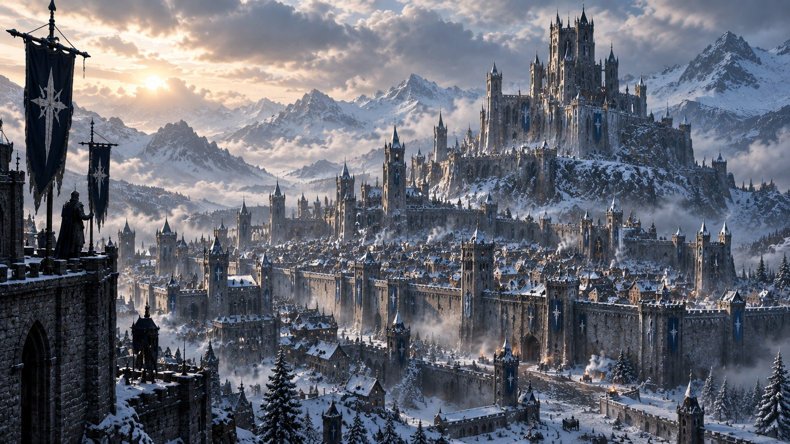
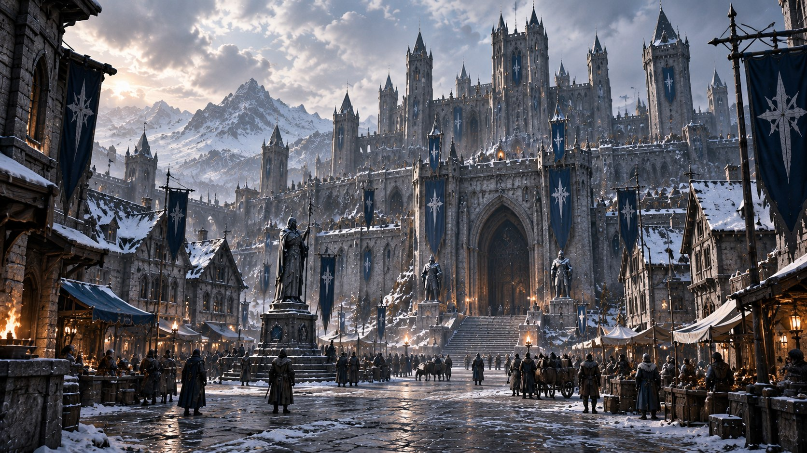
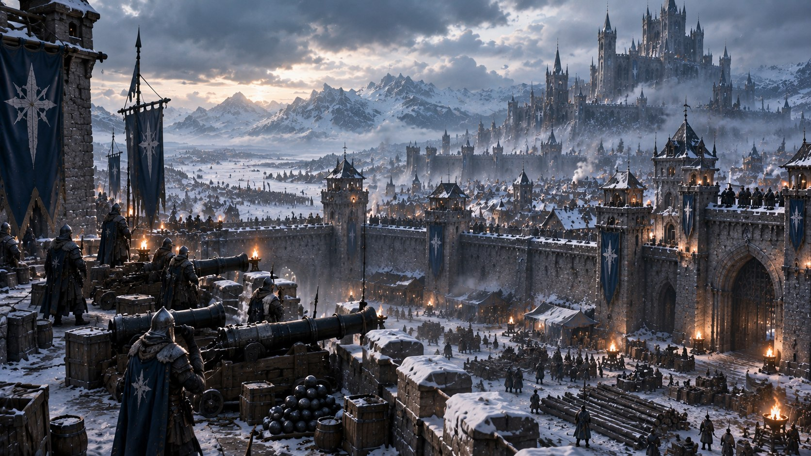

Крепость
Укреплённый комплекс внутри Майзергарда и один из ключевых объектов столицы.

Локация / Майзервин
Столица королевства Майзервин и один из важнейших оборонительных центров государства.
Архивная запись · Том I
I / Столица
Майзергард — столица королевства Майзервин и один из важнейших городов государства.
Город имеет выраженное оборонительное значение. В его пределах находится крепость, а инфраструктура Майзергарда позволяет размещать оружие, боеприпасы, оборонительные орудия и военные силы.
Центральная площадь служит одним из основных мест сбора. Неподалёку расположен вход в крепость.
При необходимости Майзергард способен быстро переходить в состояние полной боевой готовности: оборонительные орудия занимают позиции, часовые — посты, а оружие и боеприпасы распределяются по складам.
II / Внутри стен
Крепость является одним из ключевых объектов Майзергарда, однако сам Майзергард не ограничивается одной крепостью.
Это полноценный город, внутри которого существуют площадь, оборонительные позиции, склады и непосредственно крепость.

Майзергард — город.
Крепость Майзергарда является частью столицы.
III / Оборона
Военная инфраструктура занимает важное место в устройстве столицы.
При подготовке Майзергарда к обороне оружие и боеприпасы распределяются по складам, оборонительные орудия устанавливаются на позиции, а часовые занимают свои посты.
Город способен использовать собственную инфраструктуру для быстрого развёртывания сил и подготовки к нападению.

IV / Значение столицы
Майзергард занимает центральное положение в жизни королевства как его столица.
Здесь сосредоточены власть и оборона Майзервина, а город способен выполнять сразу несколько функций — от управления государством до размещения и подготовки военных сил.
При угрозе нападения Майзергард превращается из столицы в укреплённый оборонительный центр.
V / Состояние климата · изменчиво
Майзервин тесно связан с холодом, однако климатические условия королевства не оставались неизменными. Известен период, когда привычный для Майзервина холод уже отступил. Поэтому Майзергард не следует определять как город, находящийся в состоянии вечной зимы.
VI / Ресурсы и силы
В период военной угрозы Майзергард становится одной из точек концентрации сил и ресурсов Майзервина.
Инфраструктура города позволяет организовать оборону, разместить вооружение и боеприпасы, выставить часовых и подготовить оборонительные позиции.
Центральная площадь может использоваться как место сбора значительных сил.
VII / Подтверждённые объекты
Укреплённый комплекс внутри Майзергарда и один из ключевых объектов столицы.
Пространство внутри города, способное использоваться в том числе для общего сбора.
Места хранения оружия и боеприпасов, необходимых для обороны города.
Участки размещения орудий и часовых при приведении Майзергарда в боевую готовность.